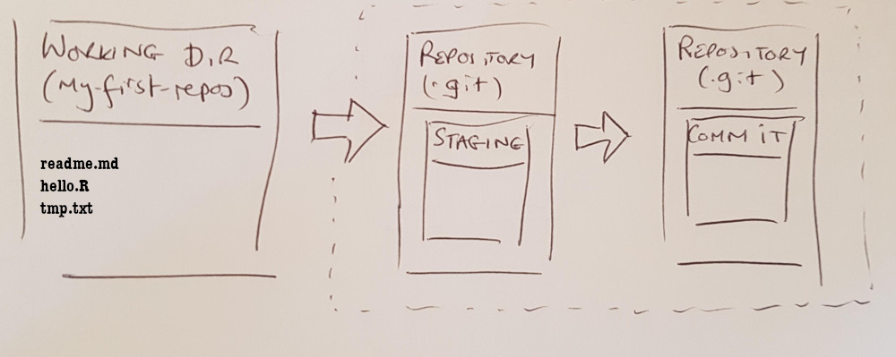
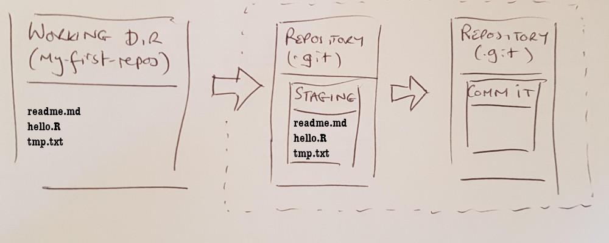
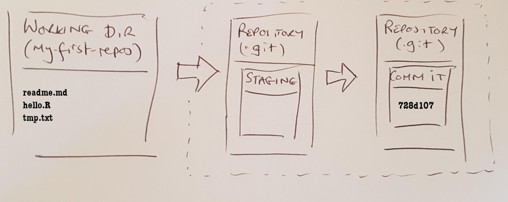

7 Stage and Commit
7.1 Adding files to projects
Let’s start to introduce files for the project. Open a text editor, enter the following contents (or download the readme.md file from the applicable section under Chapter 1) and save the file as readme.md in the first-repo directory.
# first-repo
A demo markdown file for the git workshop.Ditto for the following and save the file as hello.R in the first-repo directory.
cat("Enter a string please: ");
a <- readLines("stdin",n=1);
cat("You entered")
str(a);
cat( "\n" )
cat(a, file = "log.txt")Run the R script from the terminal by entering this text:
Rscript hello.RNow from the terminal in the first-repo directory:
git status
## On branch main
##
## No commits yet
##
## Untracked files:
## (use "git add <file>..." to include in what will be committed)
## hello.R
## readme.md
## log.txt
##
## nothing added to commit but untracked files present (use "git add" to track)We see that there are three untracked files, two of which we will ultimately want to store in the git repository. In contrast to the newly initialised repository as shown in Section 6.1.2 we now have the following:

The above is idealised. You may encounter the situation where you have many files, a number of which you have no intention of tracking under version control. You can ignore these files by creating a .gitignore file, which tells git which files it should ignore.
Create a new text file with the following content and save the file as .gitignore. This is a special configuration filename that git recognises. The . at the front of gitignore is important.
If you missed the . or mistakenly added a .txt extension then the .gitignore functionality will not work.
# .gitignore file contains files
# that the repository will ignore
log.txt
*.txtIf you list (ls - la) the files in the first-repo directory, you should see the following (or something very similar):
192-168-1-100:first-repo mark$ ls -la
total 32
drwxr-xr-x 7 mark staff 224 7 Nov 10:15 .
drwxr-xr-x 8 mark staff 256 7 Nov 10:12 ..
drwxr-xr-x 9 mark staff 288 7 Nov 10:15 .git
-rw-r--r--@ 1 mark staff 81 7 Nov 10:15 .gitignore
-rw-r--r--@ 1 mark staff 126 7 Nov 10:13 hello.R
-rw-r--r-- 1 mark staff 4 7 Nov 10:14 log.txt
-rw-r--r--@ 1 mark staff 59 7 Nov 10:13 readme.mdRun git status again and note that the log.txt file no longer registers with git.
git status
## On branch main
##
## No commits yet
##
## Untracked files:
## (use "git add <file>..." to include in what will be committed)
## .gitignore
## hello.R
## readme.md
##
## nothing added to commit but untracked files present (use "git add" to track)7.2 Commit process
Now we want to add the new file to the repository. The steps are
- Add the file (or files) that we want to include in the repository to the staging area
- Commit the staged files
7.2.1 Staging
To add the files into the staging area run the commands:
git add hello.R readme.md .gitignoreNote that the .gitignore file was added as well as the hello.R and readme.md files. Now run
git status
## On branch main
##
## No commits yet
##
## Changes to be committed:
## (use "git rm --cached <file>..." to unstage)
## new file: .gitignore
## new file: hello.R
## new file: readme.mdWe can see that no commits have occurred but that we have staged the files that we want to add to the repository.
What happens if we accidentally add a file that we did not want to add (the -f says we want to add a file that is included in the .gitignore list)?
git add -f log.txtif you run git status you will see that log.txt is also staged. To remove log.txt from the staged area:
git reset log.txtNow the picture looks like this.

7.2.2 Commit
To commit the files that have been staged:
git commit -m "First commit"
## [main (root-commit) 728d107] First commit
## 3 files changed, 15 insertions(+)
## create mode 100644 .gitignore
## create mode 100644 hello.R
## create mode 100644 readme.mdthe -m flag is necessary. When you make a commit, you need to provide a message that describes the nature of the changes.
What is the weird stuff that is output prior to the commit message ([main (root-commit) 728d107]) in the commit history? It is a unique hash code that identifies this specific version of the project. Note, you will have a different hash code (and that is fine).
When we run git status we see that the repository is up to date with the working area files. We also see that the files have been removed from the staging area.
git status
## On branch main
## nothing to commit, working tree clean
7.3 Exercises
Exercise 7.1 Create a new R script in the working directory, it can contain anything you like. If you are lost, just use:
library(survival)
print("My script")and save it as myscript.R.
Exercise 7.2 Add the new script to the staging area by following Section 7.2.1 ensuring that you review the status.
Exercise 7.3 Commit the staged files to the repository by following Section 7.2.2 making sure that you record a message for your commit.
Exercise 7.4 Edit the readme.md (use notepad or rstudio) file adding a new line with some arbitrary text. Stage the file and commit.
7.4 Tracking commit history
One of the most notable features of revision control is that you can review your project file history. The simplest way to do this is with git log which will report all of the commits in reverse chronological order. You can see
- who made the commits
- when they were made and why (the commit messages)
- the hash code associated with project version at each commit
- note that the full hash is reported whereas previous a truncated version is shown
The commit followed by (HEAD -> main) shows what part of the history our working directory currently reflects.
Here is an example (your repository will look different but that is ok)
git log
## commit 327170a6bc4d39463c4cfbc0f257420496642cb5 (HEAD -> main)
## Author: Mark <mark.jones1@sydney.edu.au>
## Date: Tue Nov 7 10:25:23 2023 +0800
##
## Minor edit
##
## commit b078716e80498c2fa7abfb8ae27b204b2dc603d8
## Author: Mark <mark.jones1@sydney.edu.au>
## Date: Tue Nov 7 10:24:58 2023 +0800
##
## New file
##
## commit 0cd2d52e989059a61315525a3488e06d22cd04a5
## Author: Mark <mark.jones1@sydney.edu.au>
## Date: Tue Nov 7 10:23:23 2023 +0800
##
## First commitYou can format the logs in a variety of ways. For a more condensed view you can use the --oneline flag:
git log --oneline
## 327170a (HEAD -> main) Minor edit
## b078716 New file
## 0cd2d52 First commitIf you want the commit history for the last n commits, or between specific dates, or by author or even via searching for a specific string in the message you can run the following
git log -n 2
git log --after="2013-11-01" --before="2023-10-15"
git log --author="Mark\|Fred"
git log --grep="first" -iTry them.
The first restricts to the last two commits, the second returns commits between mid Oct and the start of Nov, the second returns commits made by Mark or Fred and the third returns any commits where the word first was included in the message text (ignoring case).
The log command is powerful and it lets you see who updated the files, when they made the update and why they did it. Obviously, this has less utility when you are working on a repository in isolation but it still does have value (especially to your future self). For example, you might simply want to review when specific changes were made to the files or you might want to pick up some update that has been removed from the code and reintroduce it.
When you are working on a repository in collaboration (see later) the value of the logs increases many fold as a way to be able to understand the evolution of the project and to work out who you need to contact if you think a problem has been introduced.
To establish what files were included in any given commit, you can use git show:
git show --name-only 0cd2d52
## Author: Mark <mark.jones1@sydney.edu.au>
## Date: Tue Nov 7 10:23:23 2023 +0800
##
## First commit
##
## .gitignore
## hello.R
## readme.md